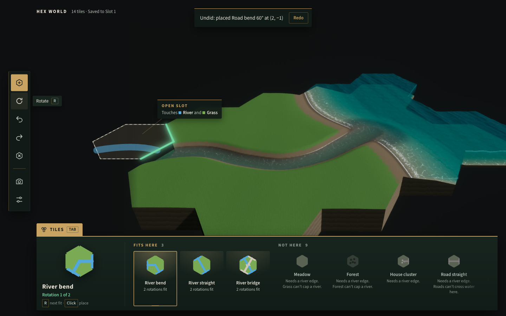
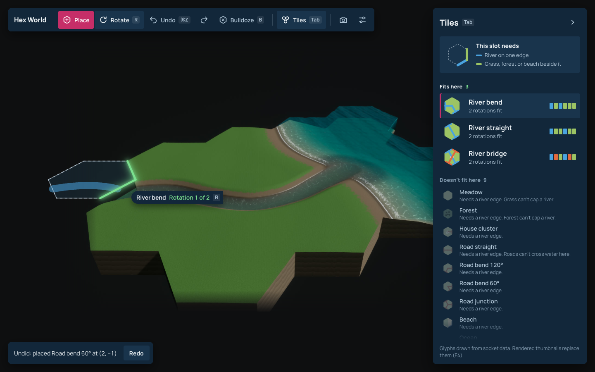
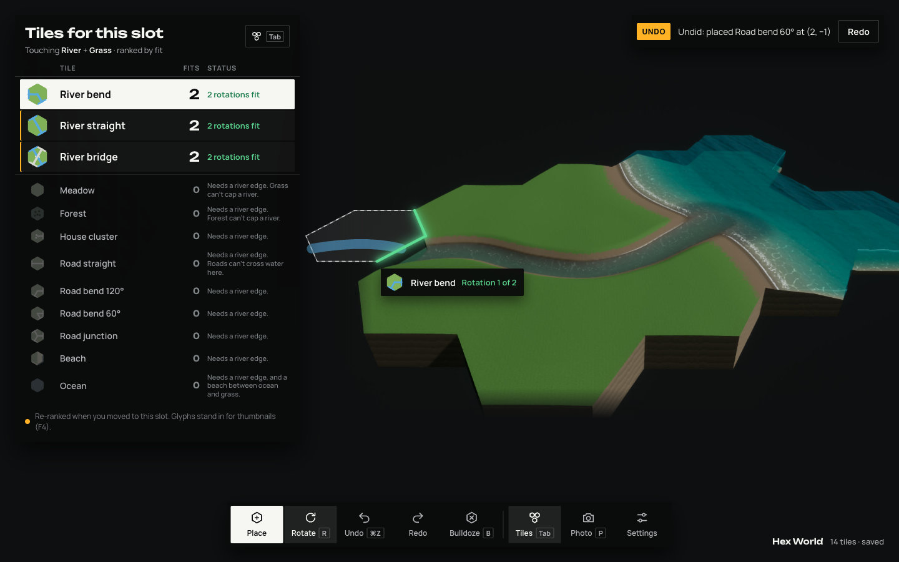

Hex World play screen: three directions
Each comp shows the same moment over the same in-engine capture: the inventory open on a slot that touches a river and grass, three river tiles that fit, nine that do not and why, River bend selected at rotation 1 of 2, the ghost with its edge glow, the tool rail, and an undo toast. Open a comp to try hover, select, Tab to close and open the inventory, R to rotate, and ⌘Z or Ctrl+Z for the undo toast. Click a dimmed tile to see the invalid state: the ghost's touching edges turn red and the reason follows the selection. Pick one, and the full mockup pass of every screen and state follows in that direction.

Vitrine
The UI is the case around a habitat diorama. A brass-trimmed caption rail runs under the scene like the label rail under museum glass. Tiles that fit are lit by a warm lamp, tiles that do not stay dark with a one-line reason, and a pinned caption tells you what the hovered slot touches. It frames the world most literally, and the open rail costs about a quarter of the screen height.

Legend
The UI is the margin of a survey map. Socket kinds are map classes, so every tile carries a six-colour socket code and the hovered slot prints its own key: what this slot needs. Fitting tiles sit on top, blocked tiles drop to compact rows with their reason. It is the most familiar layout of the three (tool bar plus right panel), and the clearest at teaching the edge rules.

Departures
The inventory is a live board ranked by fit. When you move to another slot, rows travel to their new rank instead of blinking, and whatever moved keeps one amber mark until you have seen it. Big rotation counts, a labelled dock with large targets, black panels that disappear against the void. It is the most data-forward of the three and risks feeling like a tool rather than a toy.
Also considered
Five other worlds were weighed and declined, each donating one discipline: a warm consumer app (accent colour only on what can be pressed, generous targets), a mascot catalog (every tile owns the same fixed furniture), a catalog sleeve (one colour code for sockets everywhere), a tabbed acetate manual (group by consequence, not category), and a variable-font specimen (R rotates the ghost and every fitting glyph in step). The category-standard look, a soft cozy-builder card tray, is also available if none of the three lands.
What the comps hold constant
Legality follows the frozen tile list and socket table (P2 wave-1 plan, F1 and F2): for a slot touching River and Grass only River straight, River bend and River bridge fit, each in two rotations. Tile glyphs are stand-ins drawn from each tile's socket string, because rendered thumbnails are still pending (F4). The backdrop is the approved water look-dev capture (docs/checkpoints/water/water-overview.jpg). Fonts are self-hosted OFL files with their licences in assets/fonts/. The full screen and state list for the next pass is in inventory.md.